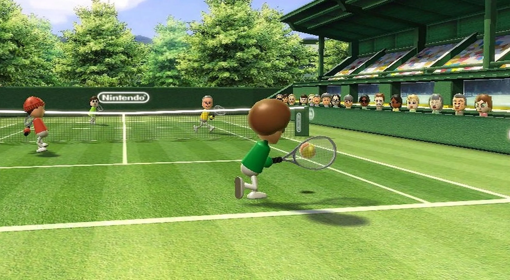

Wii Sports is a collection of five sports simulations designed to demonstrate the motion-sensing capabilities of the Wii Remote. The five sports included are tennis, baseball, bowling, golf, and boxing. Players use the Wii Remote to mimic actions performed in real-life sports, such as swinging a tennis racket or rolling a bowling ball. The rules for each game are simplified to make them more accessible to new players. The game also features training and fitness modes that monitor players' progress in the sports.
Wii Sports was well-received by critics and audiences, and is considered one of the greatest games of all time. It was also a commercial success, selling 82 million copies worldwide, becoming the best-selling Nintendo video game, as well as the fourth-best-selling video game of all time and the best-selling game exclusive to one console. It has been featured on television in Wii commercials, news reports, and other programming. The game has become a popular means for social gatherings and competitions among players of varying ages.
In 2009, a sequel, Wii Sports Resort, was released. A high-definition remake of Wii Sports titled Wii Sports Club was released in 2014 for the Wii U. Another sequel, Nintendo Switch Sports, was released for the Nintendo Switch in 2022.
Wii Sports was produced by Katsuya Eguchi, who managed Software Development Group 2 at Nintendo Entertainment Analysis and Development. With the Wii, Nintendo desired to reach those who had not played video games before. To do this, they needed software that allowed both long time and first time players to interact together in a fun way. Nintendo also wanted players to use the system daily and intended the game to be the console's flagship title to help accomplish this. Wii Sports was designed as a simple introductory title meant to offer something for both gamers and non-gamers. Sports were chosen as the theme because of the widespread familiarity with them. Rather than feature professional athletes or have realistic graphics, the game was designed to be simple so that anyone could play. Gameplay like running towards a ball in tennis was excluded to maintain simplicity. At one point in development, Super Mario characters were used, but were removed from the game because of feedback from players who preferred Miis. The non-player characters in the game were also created using the Mii Channel toolset. The game supports a 16:9 widescreen ratio and progressive scan, runs at 60 frames per second, and makes use of the Wii Remote's accelerometer to interpret the player's motion. Motion-sensing actions, like pitching and hitting, were prioritized to make them as realistic as possible. Because Nintendo did not expect players to purchase the Wii solely to play Wii Sports, they bundled the game with the console in all regions except Japan; Nintendo believed players would be more likely to play Wii Sports through this distribution method. They also felt players that enjoyed the game would increase its popularity by word of mouth. Initially, Shigeru Miyamoto and Nintendo President Satoru Iwata were hesitant to include the game as a pack-in title, but were convinced by Nintendo of America President Reggie Fils-Aimé, who believed that Wii Sports would be key to the success of the Wii console.
Satoru Iwata at Nintendo's 2006 E3 press conference
Before the Electronic Entertainment Expo (E3) Media and Business Summit of 2006, the first sport in the game was announced as Wii Sports: Tennis. It was later announced, at Nintendo's press conference prior to E3 2006, it would be part of a sports package. Iwata introduced this package as Wii Sports, and stated it would include tennis, golf, and baseball. The game was featured as both a video demonstration and an on-stage playable demo. The demo featured Iwata and Fils-Aimé in a doubles tennis match against Miyamoto and Scott Dyer, a contest winner. The other sports titles were on display at E3 and shared a similar naming convention to the tennis game, such as Wii Sports: Baseball, Wii Sports: Golf, and Wii Sports: Airplane. At the time, baseball only featured a batting simulation. The airplane title was similar to Pilotwings and required the player to maneuver an airplane through rings within a time frame. It was not included in the final game, but was later incorporated into Wii Sports Resort. At the Nintendo World event on September 14, 2006, Reggie Fils-Aime confirmed the game's five playable sports and announced that Wii Sports would be included free with every Wii console.
Wii Sports, a major factor in the Wii's worldwide success, was the first game among a number of core Wii games being developed at the same time, with the same philosophy; other games were released as Wii Play, Wii Fit, and Wii Music. A direct sequel to Wii Sports, titled Wii Sports Resort, was released in 2009. The game, along with Wii Fit, has been credited with attracting more casual, female, and elderly gamers. It has also been cited as a game that can provide a bonding experience among family members, and as a means of exercising and losing weight when played regularly. A study involving 13- to 15‑year-old teenagers was conducted by the Liverpool John Moores University and concluded that players used 2% more energy than by playing on other consoles. They stated that it was no substitute for playing a real sport, but could contribute to weight management. Wii Sports has been used to aid in the physical therapy of a boxer at the Glenrose Rehabilitation Hospital in Canada, stroke victims in Minneapolis, Minnesota and Raleigh, North Carolina, and injured soldiers in Prescott, Arizona; Washington, D.C.; and Landstuhl, Germany. Wired included the game in its list of "The 15 Most Influential Games of the Decade" at #8, for its role in popularizing motion controls and having a major impact on the "videogame landscape." In 2019, GameSpot named it one of the most influential games of the 21st century, citing its accessibility, broad appeal, and long-term impact on console development at Nintendo and other game hardware designers.